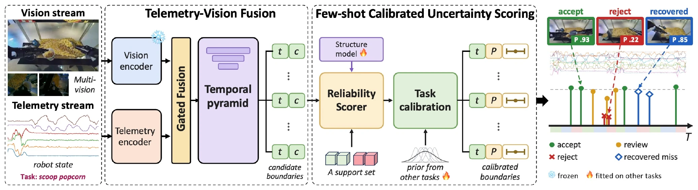
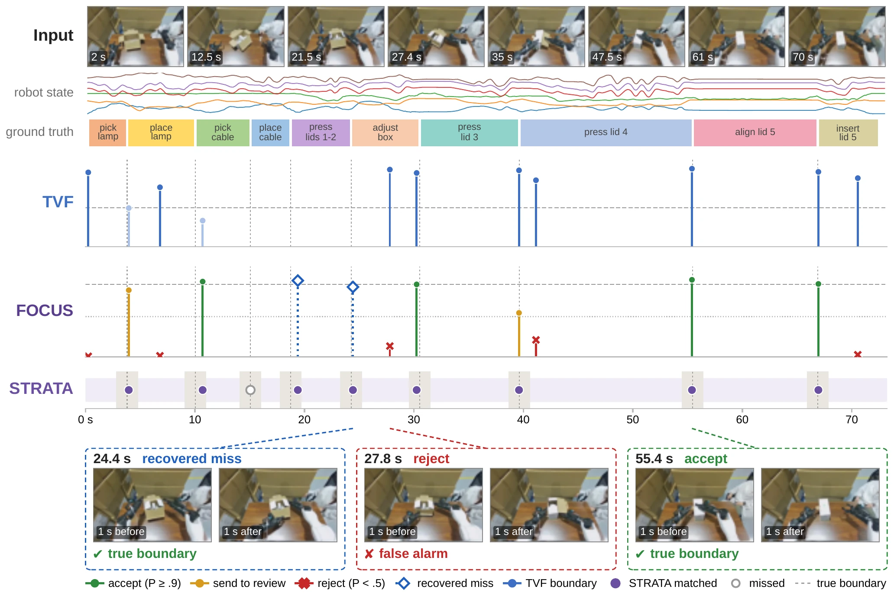
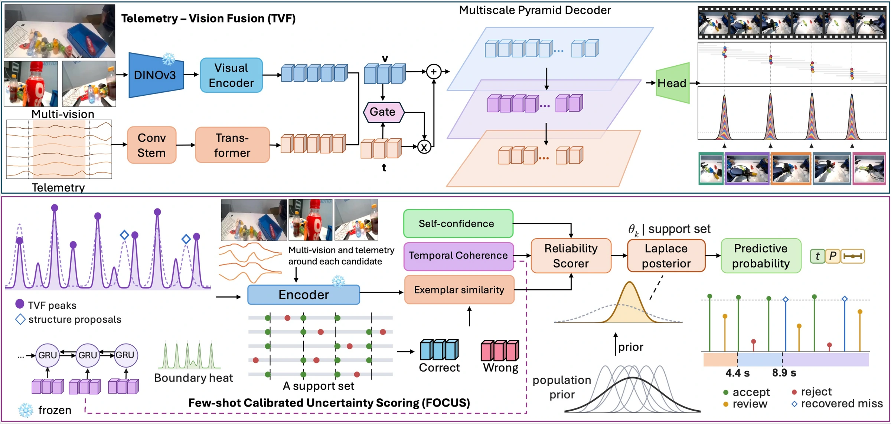
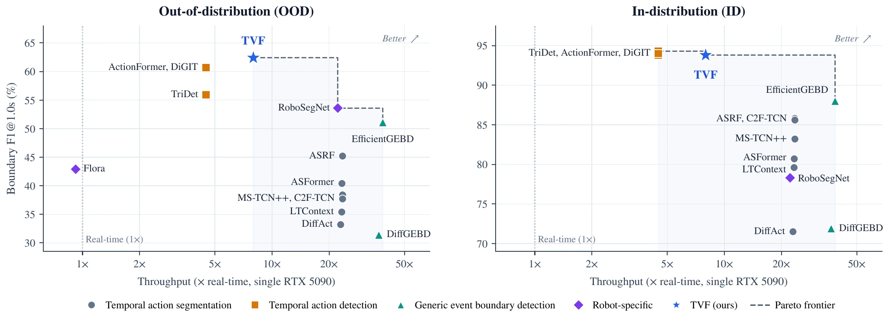
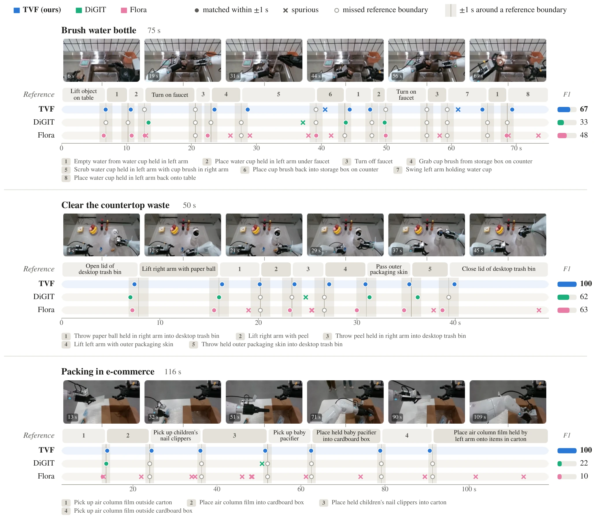

Sub-task boundary detection for long-horizon robot demonstrations via telemetry–vision fusion
TVF finds where one sub-task ends and the next begins, from three camera views and the robot's own 30 Hz telemetry. FOCUS then checks every boundary against a few labelled recordings of the new task and returns a calibrated probability: accept it, send it to review, or drop it.
Each clip plays the robot's head camera at 4× speed. Under it, three timelines share one playhead: the reference sub-tasks, TVF on its own, and STRATA after FOCUS. Each predicted segment takes the colour of the reference sub-task it covers most, so a wrong split shows as an extra divider and a missed change shows as one colour running into the next sub-task.
Recordings picked as the clearest cases among unlabelled recordings of unseen tasks; averages are under Results. Click a video to pause it.
Scaling robot learning from heterogeneous demonstrations requires decomposing long-horizon trajectories into coherent sub-tasks, yet manual temporal annotation remains a major bottleneck for scalability. Automating this pipeline across diverse workflows demands boundary detectors that transfer to unseen tasks and reliably quantify their uncertainty to guide human-in-the-loop review. Existing detectors rely primarily on visual streams, leaving high-frequency robot proprioception underutilized and suffering sharp performance drops and miscalibrated confidence on unseen tasks. We address both challenges with STRATA, a unified framework comprising two components. First, Telemetry-Vision Fusion (TVF) aligns and selectively gates high-frequency proprioceptive telemetry into frozen visual representations, capturing fine-grained physical transitions that are otherwise missed by vision alone. Then, Few-Shot Calibrated Uncertainty Scoring (FOCUS) adapts uncertainty estimates to unseen tasks using a small annotated support set, comparing candidate boundaries against task-specific matched and spurious exemplars via hierarchical Bayesian calibration. Across three public manipulation benchmarks and a new whole-body humanoid manipulation dataset, which we will publicly release, TVF improves zero-shot boundary F1@0.5s on unseen tasks over the SOTA baseline by 2.5, 10.6, and 13.7 percentage points on AgiBot World Alpha, AgiBot World 2026, and Galaxea Open-World, respectively, while remaining competitive on in-distribution tasks. Concurrently, FOCUS improves error-detection AUROC on unseen tasks from 0.60–0.67 (raw confidence) to 0.75–0.84, delivering calibrated existence probabilities, predictive timing intervals, and false-discovery-rate control for selective auto-acceptance. Together, STRATA allows for an accurate and scalable human-in-the-loop data annotation process.
Boundary F1@0.5 s on unseen Galaxea tasks over the strongest baseline (TVF 30.5 vs. DiGIT 16.8). +10.6 on AgiBot World 2026, +2.5 on AgiBot World Alpha.
Error-detection AUROC with FOCUS on AgiBot World 2026, from 0.67 with raw confidence. Post-hoc calibrators cannot move it: they keep the ranking.
False discoveries among auto-accepted boundaries with conformal selection at α = 0.1 (4 / 8 / 3% on the three benchmarks).
Whole-body humanoid recordings with 43,829 annotated sub-task boundaries, to be released.

Nine recordings of tasks that no model saw in training, from three benchmarks and three robots. Pick one, step through the pipeline, then hover or tap the timeline to see the frame, the sub-task, and what FOCUS decided about each candidate boundary. Use the arrow keys to jump between candidates.
How these were picked: among all unlabelled recordings of unseen tasks, the ones where FOCUS changed TVF's output the most, at most one per task. They show what the pipeline can do, not its average; averages over all unseen tasks are under Results. FOCUS uses five labelled recordings of each task, none of them shown here; P values are from one random draw of those five.

STRATA pairs a multimodal boundary detector trained on source tasks with a few-shot calibrator that adapts to each unseen task from L = 5 labelled recordings, without retraining the detector.

Visual appearance changes a lot from task to task. Contact and gripper actuation leave short, largely task-invariant marks in the joint signals. TVF keeps those high-frequency cues instead of averaging them away.
Three camera views go through frozen DINOv3 at 2 Hz, a spatial Transformer across views and a temporal Transformer. The 30 Hz robot state and its differences go through 1D convolutions, then mean and max pooling onto the same 0.5 s ticks, so sharp kinematic spikes survive.
A learned residual gate decides, tick by tick, how much telemetry to add to the visual token. Vision stays the base representation. Telemetry joins in during physical transitions, when the gripper often blocks the camera.
A multiscale Transformer pyramid sees seconds of context. At each tick the head predicts a confidence and a distribution over sub-tick offsets. Overlapping 9 s windows are merged across the whole recording into candidate boundaries.
Which input carries the signal?
Table 5 · Galaxea Open-World, 36 unseen task families, boundary F1@1 s (%). Without telemetry, F1 drops by 11.2 points. Telemetry alone beats both vision-only variants.
Fast enough for whole archives

On a new task, a detector's confidence stops meaning much: even among detections with confidence ≥ 0.9, 18–37% are spurious. A calibrator that rescales one score cannot reorder candidates inside a task. FOCUS adds evidence that can.
Ranking errors on unseen tasks
Table 2 · task-macro within-task AUROC on confident TVF detections, ECE, and boundary F1@1 s after filtering; L = 5 labelled recordings per task, 20 random draws.
Auto-accept with a false-discovery budget
| α = 0.1 | Alpha | AgiBot 2026 | Galaxea |
|---|---|---|---|
| Recall, raw + BH | 14% | 32% | 5% |
| Recall, FOCUS + BH | 21% | 47% | 11% |
| Realised FDR, FOCUS | 4% | 8% | 3% |
| ECE at ±0.5 s, qk(0.5) | 2.8 | 1.3 | 0.7 |
Table 3 · recall is the share of true boundaries accepted without review. The FDR stays under the 10% budget on average; it is approximate because candidates in one recording are correlated.
Class-agnostic boundary F1, task-macro over full recordings, against 13 baselines from four families: temporal action segmentation (TAS), temporal action detection (TAD), generic event boundary detection (GEBD), and robot-specific segmenters. Every model is scored the same way.

Most robot datasets show wheeled mobile manipulators. Ours records a full-body humanoid on long tasks, with dense demonstrations per task: execution variability, fine transition timing, and cross-robot transfer can all be studied in a controlled way. Every sub-task segment comes with a natural-language description. Release on acceptance.
| Table 8 | Pick and place | Cloth folding | Total |
|---|---|---|---|
| Objects | rigid | deformable | – |
| Recordings | 1,153 | 1,665 | 2,818 |
| Hours | 50.0 | 50.0 | 100.0 |
| Median length (s) | 140 | 96 | 119 |
| Boundaries / recording | 20.6 | 12.1 | 15.6 |
| Median sub-task (s) | 6.7 | 4.9 | 6.0 |
Cameras: head and torso (640×400), left and right wrists (640×480), all at 30 Hz.
Transfer from Galaxea to the humanoid · F1@1 s
| Table 4 | Zero-shot | Fine-tuned, 10 h |
|---|---|---|
| ActionFormer | 6.1 | 57.3 |
| RoboSegNet | 17.5 | 59.8 |
| Flora (9B VLM) | 35.0 | – |
| TVF | 26.0 | 68.6 |
Telemetry shifts across robot bodies, so zero-shot TVF trails Flora, a far larger vision-language model. With 10 h of humanoid data, TVF is best at every tolerance.
@inproceedings{strata2027, title = {STRATA: Sub-Task Boundary Detection for Long-Horizon Robot Demonstrations via Telemetry-Vision Fusion}, author = {Anonymous}, booktitle = {Under review}, year = {2026} }